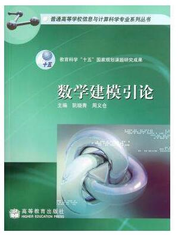
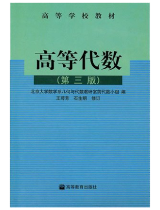
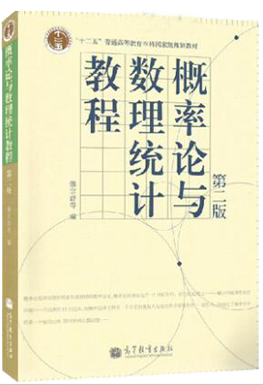

-
 数学建模就是通过计算得到结 果来解释实际问题，并接受实际的 检验，建立数学模型的全过程。 人们就要在深入调查并且 研究了解假设分析表达建立模型。
-
又称高级微积分，分析学中最 古老的、最基本的分支。一般指以 微积分学和无穷级数一般理论为主 要内容，并包括它们的理论基础的 一个较为完整的数学学科。它也是 大学数学专业的一门基础课程。
-
 初等代数从最简单的一元一次 方程开始，初等代数课本一方面进 而讨论二元及三元的一次方程组， 另一方面研究二次以上及可以转化 为二次的方程组，而且可以沿着这两个方向 继续发展。
-
 《概率统计》是高等院校理工 类、经管类的重要课程。 内容包括：概率论的基本概念 随机变量及其概率分布、数字特征 大数定律与中心极限定理等内容。
-

常微分方程，学过中学数学的 人对于方程是比较熟悉的；在初等 数学中就有各种各样的方程，比如 线性方程、二次方程、高次方程、 指数方程、对数方程、三角方程 和方程组等。
-
以复数作为自变量和因变量的 函数就叫做复变函数。而与之相关 的理论就是复变函数论。解析函数 是复变函数中一类具有解析性质的 函数，复变函数论主要就研究复数 域上的解析函数。
解析几何又称为坐标几何，早 先被叫作笛卡儿几何 解析几何通常使用二维的平面 直角坐标系研究直线、圆、圆锥曲 线、摆线、等各种一般平面曲线。
以实数作为自变量的函数就做 实变函数，以实变函数作为研究对 象的数学分支就叫做实变函数论。 它是微积分学的进一步发展。实变函数论还要研 究实变函数的类问题、结构问题。